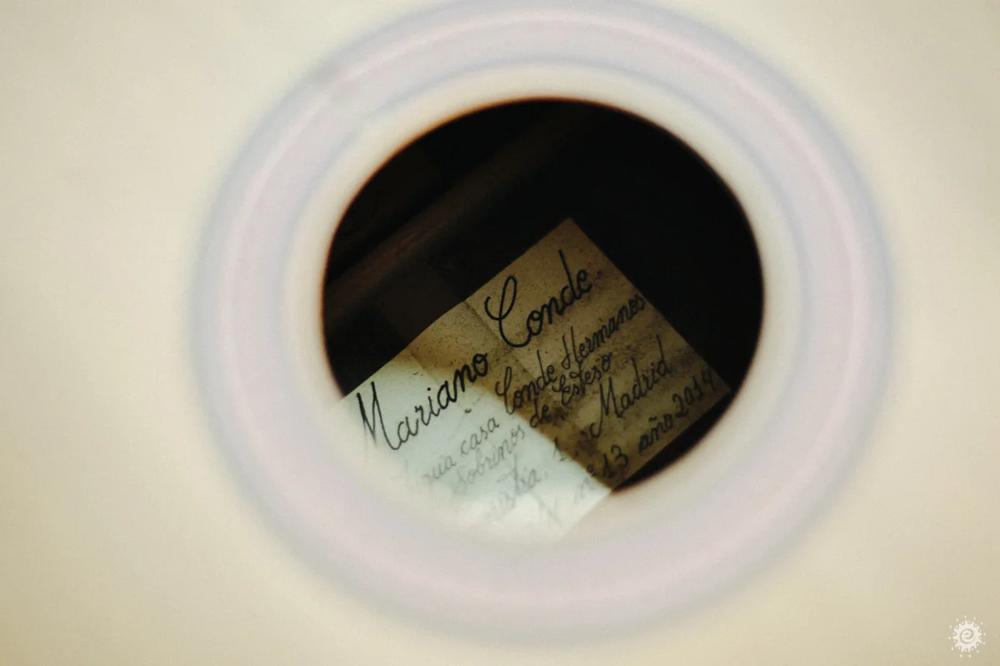
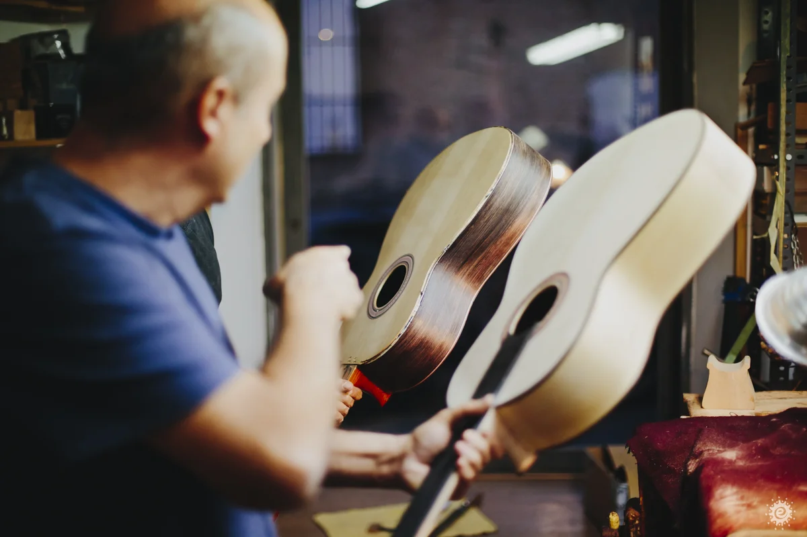
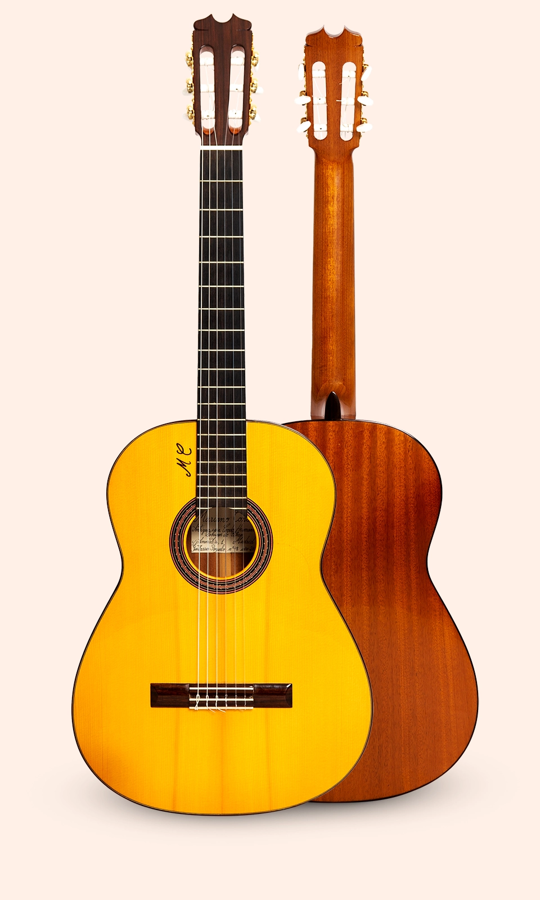
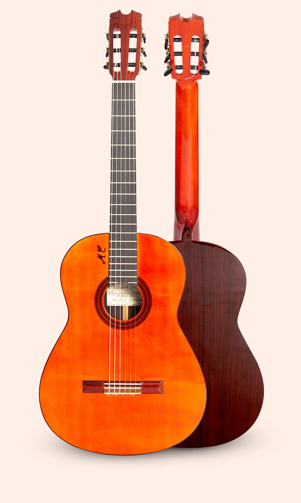
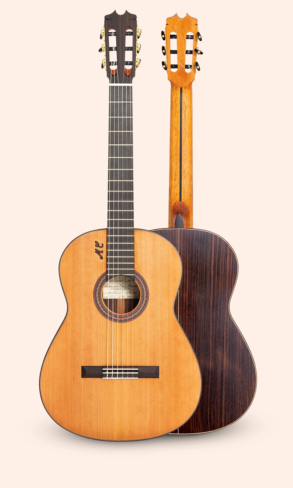

Home/ Guitars
Every guitar
a voiceown.
Concert flamenco, third-rate classical and models bred for the poem. All with handwritten numbered labels, half-moon heads and initials MC engraved on the lid.
The catalog
Two paths,
the same signature.
Solid wood and natural drying of at least 20 years or more, depending on the model. Each guitar is built by hand in the workshop on Amnistía, Madrid street.
flamenco guitars
Dry beat, direct attack and cypress as a hallmark. Instruments designed for singing, dancing and concert playing.
See 12 models ↗

Classical concert guitars
Third, round bell and projection for the room. Fir, palo santo, mahogany and other woods selected one by one.
See 7 models ↗Selection
Models
highlights.

Pozuelo Flamenco
Piece of its own character, with a direct attack and a projection designed for the stage.
From €4,840
Pozuelo Flamenco Mahogany
The same half-moon head with mahogany back and sides: warm tone, round response and great playing comfort.
From €4,840
Pozuelo Flamenco Palo Santo
Variant in Indian rosewood, with a dry attack and deep body, designed for concert playing.
From €4,840
Pharaon
Immediate response and a dry sound, the traditional voice of the flamenco guitar.
From €6,655
Pozuelo classic mahogany
Golden and warm timbre, with a generous projection in the room.
From €4,840
Pozuelo classic palo santo
One of the most unique pieces in the workshop, with great sonorous depth.
From €4,840
EC-1
Classic third with a round tone and comfortable response for recital.
From €6,655
EC-3
Precision and color in all registers, with the traditional construction of the house.
From €9,075Second hand guitars
an opportunity
with history.
Discover the opportunities offered by our section of old flamenco and classical guitars. Instruments that have lived another life and that continue to be tuned in the same tradition.
Second hand ↗